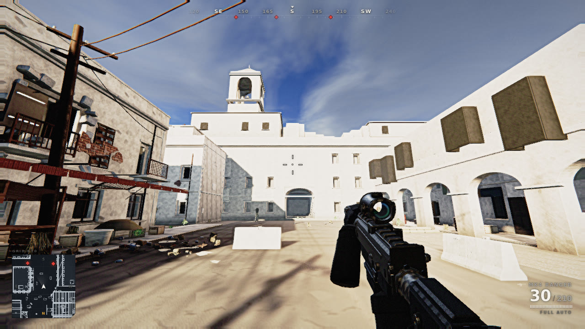
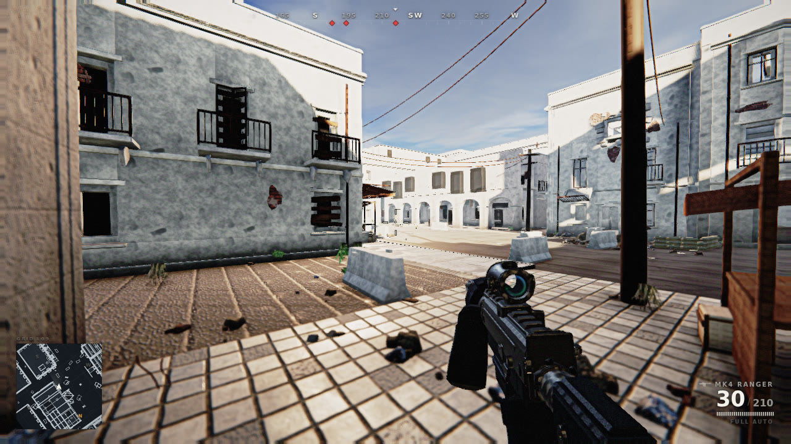

Claude of Duty
starting
building level
ready

TheatreDust Corridor
ContractSearch & Destroy
ThreatVeteran

38,926 lines of TypeScript
Zero image files
every texture generated at runtime
One browser tab.

Judged blind against the real thing.
r3b vs r3aRegressed
r3c vs r3aChampion
qa/CHAMPION.md

Claude of Duty
No textures. No art team. One tab.